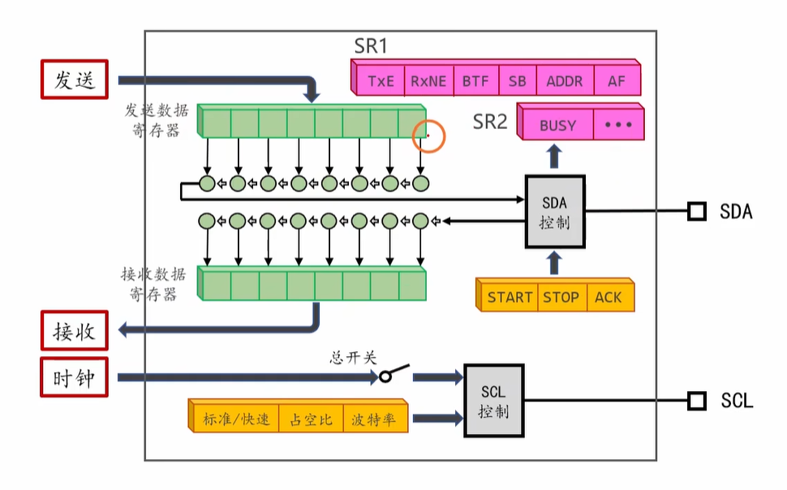

I2C
stm32中I2C通信模块的学习笔记
I2C的概念
串口的缺点
只能进行一对一的通信，一个串口只能连接一个串口设备，一块开发板最多连接三个串口设备。
I2C总线的物理层结构
电路结构

-
I2C总线由SCL(时钟线)和SDA(数据线)两条导线组成.
-
SCL（Serial Clock Line）:时钟由主机产生，用于同步数据传输。
-
SDA（Serial Data Line）:数据线，用于传输地址、命令和数据。
-
-
I2C总线只有一个主机,通常就是单片机;其余挂载在I2C总线上的设备成为从机,主机和从机都有一个SCL引脚与SCL总线相连,一个SDA引脚与SDA总线相连.
-
从机的地址为7位,范围是0000000(0)到1111111(127),除去某些特殊地址,最多能同时挂载100多个从机.
-
所有的SCL和SDA引脚都要设置为开漏输出,原因如下:
-
如果使用推挽输出,各从机分别输出高电平和低电平时,会造成VCC直接连到GND导致短路.如果每个设备的引脚都主动输出高或低，总线必将发生冲突和短路。
-
开漏输出实现 线与（Wired-AND）逻辑：只要总线上任何一个设备输出低电平，整条总线就是低电平；只有当所有设备都输出高电平（即全部进入高阻态） 时，总线才被允许变为高电平。
线与逻辑:在硬件上实现逻辑与运算.
-
-
SCL线与SDA线各连接一个上拉电阻,原因如下:
-
开漏模式下引脚无法主动输出高电平,所有设备都不拉低电平时,通过上拉电阻可以将总线拉到高电平
-
默认状态（空闲时）：所有设备都不拉低总线，上拉电阻把总线电平拉到 VCC，即高电平。这就是总线的空闲状态（IDLE）。
-
当某个设备要 发送"1" 时：它把自己的引脚设置为高阻态，上拉电阻自动把总线拉高到VCC。
-
当某个设备要 发送"0" 时：它把自己的 NMOS 导通，强行将总线拉低到 GND。这个"拉低"的力度很强，大于上拉电阻"拉高"的力度，使总线电平降到接近 0V。
-
I2C总线的通信层协议架构
信号发送方式
时钟信号
所有从机的SCL都写1,主机的SCL周期性交替写0和1;由于逻辑线与,主机的SCL写0时,SCL线为低电平,主机的SCL写1时,SCL线为高电平。从而产生高低周期性变化的方波信号。
数据信号
-
主机向从机发送：所有从机的SDA都写1,主机的SDA写0和1;由于逻辑线与,主机的SDA写0时,SDA线为低电平,主机的SDA写1时,SDA线为高电平。从而通过高低变化的信号传输数据。
-
主机读从机信号：主机和其余从机的SDA都写1.读数据的从机SDA写0或1，由于逻辑线与,从机的SDA写0时,SDA线为低电平,从机的SDA写1时,SDA线为高电平。从而通过高低变化的信号传输数据。
任何信号发送接收都由主机主导，从机之间不能直接互相发送信号，除非经过主机中转。
通信流程

I2C的数据帧简图
-
主机发起通信请求，即发送一位起始位
-
寻址：主机发送从机的7位地址，再增加一位方向位表示本次需执行的操作（读为1，写为0）。等待对应地址的从机发送一个ACK来应答。
-
地址位需要在实际地址的基础上左移一位，目的是将地址值对准高7位，最低位用来表示方向位。
例如，将7位的原设备地址（如0x3C）左移1位变成8位的值（如 0x78），空出的最低位（LSB）用于表示读写操作。 -
加上读写位后：
-
写操作：0x78 | 0x00 = 0x78（二进制 1111 0000）
-
读操作：0x78 | 0x01 = 0x79（二进制 1111 0001）
-
-
-
数据传输：读数据则是从机向主机传输，写数据则是主机向从机传输
-
传输完成后，主机主动停止传输，发送一位结束位
起始位（START）与停止位（STOP）
| 条件 | 操作（SCL高电平时） | 说明 |
|---|---|---|
| 起始位（S） | SDA 从高电平 → 低电平 | 表示数据传输开始 |
| 停止位（P） | SDA 从低电平 → 高电平 | 表示数据传输结束 |
数据传输与应答（ACK/NACK）
-
数据在SCL高电平时有效，每传输8位数据后，接收方必须在第9个时钟周期内拉低 SDA，产生一个应答信号（ACK,Acknowledge），表示收到。
-
如果接收方不拉低 SDA（保持高电平），则表示 非应答（NACK），通常用于告诉主机"不要再发了"或"没有收到"。
完整的I2C数据帧结构
flowchart LR
S["起始位<br>START"] --> A["发送设备地址（7位）+ 读写位（1位）"]
A --> ACK1["从机应答<br>ACK"]
ACK1 --> C["发送寄存器地址<br>（可选，取决于设备）"]
C --> ACK2["从机应答（可选，取决于前项是否存在）<br>ACK"]
ACK2 --> D["发送/接收数据<br>（1~N个字节）"]
D --> ACK3["应答（ACK/NACK）"]
ACK3 --> P["停止位<br>STOP"]I2C每个数据帧可一次性发送多个字节的有效数据，但每个字节之间要发送一个ACK
硬件I2C模块的使用

I2C外设在总线上的位置
I2C的速度模式

-
kbps/Mbps是波特率的单位
-
STM32F103C8T6只支持标准模式和快速模式，按需求视情况使用
时钟信号的占空比
-
在快速模式（FM）下才能设置时钟信号的占空比。
-
占空比：整个周期中高电平的比例
-
可选占空比（低电压比高电压）：2/1或16/9
I2C的详细内部结构

发送端
将待发送的数据写入发送数据寄存器中，I2C模块会将其移入移位寄存器中，再通过移位寄存器按位从高到低将数据发送出去。
接收端
将待接收的数据按位从高到低移入移位寄存器中，I2C模块会将其写入接收数据寄存器中，再从接收数据寄存器中读出数据。
SR1与SR2
-
含义：Status Register,状态寄存器。SR1即状态寄存器1，SR2即状态寄存器2.
-
作用：存储有关I2C运行状态的标志位。
SDA控制寄存器
可分别向其中的START\STOP\ACK位写1，使I2C发送开始位\结束位\ACK的标志。
SCL控制寄存器
用于设置I2C通信的模式、占空比以及波特率。
为I2C初始化IO引脚
IO引脚配置

I2C对应的IO引脚，也可查阅芯片手册
编程接口
详见编程接口的相关内容
发送数据
发送数据的流程简介
-
向SDA控制寄存器中的START位写1，I2C模块会拉低SDA电平，表示起始位。
-
发送七位地址+一位方向位，与正常发送的流程相同。
-
等待从机ACK应答（通过读取SR中的标志位）。如果未收到ACK，则直接发送停止位。
-
正常发送一个字节的数据。
-
等待从机ACK应答（通过读取SR中的标志位）。
-
重复4和5，直到发送完成。
-
向SDA控制寄存器中的STOP位写1，I2C模块会拉高SDA电平，表示停止位。
等待总线空闲
-
由SR2上的BUSY（总线忙）标志位确定，当总线空闲时标志位为0，总线忙时标志位为1.
-
使用查询标志位函数确定BUSY标志位的值，从而确定总线是否空闲。
发送起始位
-
使用
I2C_GenerateSTART(I2C_TypeDef *I2Cx,ENABLE)发送 -
由SR1上的SB标志位确定起始位是否发送，发送完成时值为1，未发送时值为0
发送地址
-
发送完地址后需等待ACK应答
-
AF标志位(Acknowledge Failure):未收到ACK时值为1，否则值为0.
需将AF标志位初始清零，使用
I2C_ClearFlag(I2Cx,I2C_FLAG_AF)。读取SR后AF会自动清零。
- ADDR标志位：寻址成功时值为1，否则值为0.
寻址成功后要将ADDR标志位清零，具体是使用
I2C_ReadRegister(I2C_TypeDef *I2Cx, uint32_t I2C_Register)，先读SR1，再读SR2即可。
- 如果发送失败，直接发送停止位
发送数据
-
每次写入数据前查询TxE标志位，查询发送数据寄存器是否为空。
-
每发送一个字节数据，要查询一次AF标志位，确定数据是否被从机接收。
只要有AF标志位为1的情况，就直接转到发送停止位(发送前需清除AF)
- BTF标志位确定数据是否发送完成，只有发送数据寄存器和移位寄存器都为空时，BTF取1，表明发送完成。
发送停止位
- 使用
I2C_GenerateSTOP(I2C_TypeDef *I2Cx,ENABLE)发送停止位
发送停止位前，必须确保 BTF 标志位已置位（即上一个字节已完全发送出去），否则会导致数据发送不完整。
接收数据
接收数据的过程简介
-
向SDA控制寄存器中的START位写1，I2C模块会拉低SDA电平，表示起始位。
-
发送七位地址+一位方向位，与正常发送的流程相同。
-
等待从机ACK应答（通过读取SR中的标志位）。如果未收到ACK，则直接发送停止位。
-
从机发送一个字节的数据
-
主机发送ACK应答
-
重复4和5直到主机不再需要接收数据
-
主机接收最后一个字节后，发送一个NAK信号
-
向SDA控制寄存器中的STOP位写1，I2C模块会拉高SDA电平，表示停止位。
等待总线空闲
-
由SR2上的BUSY（总线忙）标志位确定，当总线空闲时标志位为0，总线忙时标志位为1.
-
使用查询标志位函数确定BUSY标志位的值，从而确定总线是否空闲。
发送起始位
-
使用
I2C_GenerateSTART(I2C_TypeDef *I2Cx, ENABLE)发送起始位。 -
通过读取SR1寄存器的SB标志位确定起始位是否发送完成，发送完成时值为1，未发送时值为0。
发送地址
-
发送完地址后需等待从机的ACK应答。
-
AF标志位（Acknowledge Failure）：未收到ACK时值为1，否则值为0。
需将AF标志位初始清零，使用
I2C_ClearFlag(I2Cx,I2C_FLAG_AF)
- ADDR标志位：寻址成功时值为1，否则值为0。
寻址成功后必须将ADDR标志位清零，具体操作是：先读取SR1寄存器，再读取SR2寄存器（或使用标准库事件检查函数自动处理）。
- 如果地址发送失败（检测到AF标志置位），应直接发送停止位，结束本次通信。
接收数据
-
每次接收一个字节前，先查询RxNE标志位（Receive Data Register Not Empty），确认接收数据寄存器中已经有有效数据。
-
读取DR寄存器后，可以获得一个字节数据，同时硬件会自动清除RxNE标志位，准备接收下一个字节。
发送ACK/NAK
- 在接收完一个字节后，若还需要继续接收数据，则主机发送ACK，通知从机继续发送下一个字节。
ACK只作用与正在被接收的字节，因此要在接收字节之前就配置好
-
当接收最后一个字节时，主机发送NAK(Not Acknowledge)，表示后续不再接收数据。
-
发送ACK/NAK的操作由软件通过
I2C_AcknowledgeConfig()函数进行控制：-
I2C_AcknowledgeConfig(I2Cx, ENABLE)→ 硬件在接收到字节后自动回复ACK；实际寄存器操作是向SDA控制寄存器的ACK位写1. -
I2C_AcknowledgeConfig(I2Cx, DISABLE)→ 硬件在下一个字节后回复NAK；实际寄存器操作是向SDA控制寄存器的ACK位写0.
-
注意：NAK必须在接收倒数第二个字节之后、接收最后一个字节之前配置，即调用I2C_AcknowledgeConfig(I2Cx, DISABLE)，而不是在收到最后一个字节之后再发送。
发送停止位
使用I2C_GenerateSTOP(I2C_TypeDef *I2Cx, ENABLE)发送停止位。
向STOP位写1应该与配置NAK同时进行。
软件I2C
OLED显示器

OLED电路连接图
编程接口
初始化和使能接口
void I2C_Init(I2CTypeDef *I2Cx,I2C_InitTypeDef *I2C_InitStruct)
-
作用：初始化I2C。
-
参数：
-
I2Cx:指定初始化的I2C，可选
I2C1,I2C2。 -
I2C_InitStruct:I2C的初始化结构体。成员包括：
-
I2C_Mode:数据类型uint16_t，作用是选择 I2C 的工作模式。可选
I2C_Mode_I2C(I2C 模式)。 -
I2C_ClockSpeed：数据类型uint32_t，作用是设置 SCL 时钟频率 （必须≤400kHz）。例如：100000 (100kHz), 400000 (400kHz)。
-
I2C_DutyCycle：数据类型uint16_t，作用是配置快速模式（>100kHz）下的占空比。标准模式下此参数无效。
可选I2C_DutyCycle_2（）或I2C_DutyCycle_16_9（） -
I2C_Ack：数据类型uint16_t，作用是使能或禁用应答（ACK）功能。
可选I2C_Ack_Enable(使能应答)或I2C_Ack_Disable（禁用应答）此处不能随手填ENABLE和DISABLE
-
I2C_AcknowledgedAddress：数据类型uint16_t，作用是指定从机模式下，响应 7 位还是 10 位地址。
可选I2C_AcknowledgedAddress_7bit(7 位地址)或I2C_AcknowledgedAddress_10bit(10 位地址)此参数与单片机作从机有关，初学阶段几乎不会用，可以不设置。
-
I2C_OwnAddress1：数据类型uint16_t，作用是设置本机（从机模式）的 7 位或 10 位地址。
-
7 位地址：0x00 ~ 0x7F（需左移一位）
-
10 位地址：0x000 ~ 0x3FF
此参数与单片机作从机有关，初学阶段几乎不会用，可以不设置。
-
-
-
void I2C_Cmd(I2C_TypeDef *I2Cx, FunctionalState NewState)
-
作用：使能或关闭指定的 I2C 外设。
-
参数：
-
I2Cx：指定要操作的 I2C 外设，可选
I2C1、I2C2。 -
NewState：传入
ENABLE表示使能 I2C 外设，传入DISABLE表示关闭 I2C 外设。
-
-
说明：在完成初始化配置后，通常还需要调用该函数来真正开启 I2C 外设，之后才能进行数据传输。
I2C特殊位操作
发送起始位
void I2C_GenerateSTART(I2C_TypeDef *I2Cx, FunctionalState NewState)
-
作用：向SDA控制寄存器的START位写1，I2C模块会在SCL高电平时将SDA从高电平拉低，产生起始条件（START Condition）。
-
参数：
-
I2Cx：指定I2C外设，可选
I2C1、I2C2。 -
NewState：传入
ENABLE产生起始条件，传入DISABLE不产生。
-
-
说明：发送START前应确保I2C总线空闲（BUSY=0），否则起始条件不会生效。起始位发送成功后SR1中的SB位会被硬件置1，可通过查询
I2C_FLAG_SB确认。
发送停止位
void I2C_GenerateSTOP(I2C_TypeDef *I2Cx, FunctionalState NewState)
-
作用：向SDA控制寄存器的STOP位写1，I2C模块会在SCL高电平时将SDA从低电平拉高，产生停止条件（STOP Condition）。
-
参数：
-
I2Cx：指定I2C外设，可选
I2C1、I2C2。 -
NewState：传入
ENABLE产生停止条件，传入DISABLE不产生。
-
-
说明：停止条件表示本次传输结束，总线恢复空闲状态（SCL和SDA均为高电平）。主机发送完最后一个字节后必须发送STOP，否则从机会一直等待后续数据。
ACK操作
void I2C_AcknowledgeConfig(I2C_TypeDef *I2Cx, FunctionalState NewState)
-
作用：使能或关闭I2C的自动应答功能，控制I2C模块在接收到一个字节后是否自动发送ACK信号。
-
参数：
-
I2Cx：指定I2C外设，可选
I2C1、I2C2。 -
NewState：传入
ENABLE表示使能自动应答（接收时自动发送ACK），传入DISABLE表示关闭自动应答（接收时发送NACK）。
-
-
说明：主机接收最后一个字节前需关闭ACK（发送NACK），从机收到NACK后停止发送数据，主机再发送STOP结束传输。
标志位操作
FlagStatus I2C_GetFlagStatus(I2C_TypeDef *I2Cx, uint32_t I2C_FLAG)
-
作用：查询指定I2C外设的状态标志位，用于判断通信状态（是否发送完成、是否收到ACK、总线是否空闲等）。
-
参数：
-
I2Cx：指定I2C外设，可选
I2C1、I2C2。 -
I2C_FLAG：需要查询的标志位名称，常用标志如下：
-
I2C_FLAG_SB：起始位已发送（START Bit） -
I2C_FLAG_ADDR：地址已发送/接收并收到ACK -
I2C_FLAG_BTF：字节传输完成（Byte Transfer Finished） -
I2C_FLAG_TxE：发送数据寄存器为空 -
I2C_FLAG_RxNE：接收数据寄存器非空 -
I2C_FLAG_STOPF：停止位已接收（STOP Flag） -
I2C_FLAG_AF：应答失败（ACK Failure） -
I2C_FLAG_BERR：总线错误（Bus Error） -
I2C_FLAG_OVR：过载/欠载错误（Overrun/Underrun） -
I2C_FLAG_BUSY：总线忙（Bus Busy） -
I2C_FLAG_MSL：主/从模式标志（Master/Slave）
-
-
-
返回值：返回
SET表示标志位已置1（条件满足），返回RESET表示标志位为0（条件不满足）。 -
用法示例：
1 | // 等待发送数据寄存器为空 |
ErrorStatus I2C_CheckEvent(I2C_TypeDef *I2Cx, uint32_t I2C_EVENT)
-
作用：检查I2C外设是否发生了指定的事件，本质上是组合查询SR1和SR2中的多个标志位。
-
参数：
-
I2Cx：指定I2C外设，可选
I2C1、I2C2。 -
I2C_EVENT：需要检查的事件，常用事件如下：
I2C_EVENT_MASTER_MODE_SELECT：主机模式已选择（SB=1，起始位已发送）I2C_EVENT_MASTER_TRANSMITTER_MODE_SELECTED：主机发送模式已选择（ADDR=1，地址已发送）I2C_EVENT_MASTER_RECEIVER_MODE_SELECTED：主机接收模式已选择（ADDR=1，地址已发送）I2C_EVENT_MASTER_BYTE_TRANSMITTING：主机字节正在传输（TxE=1或BTF=1）I2C_EVENT_MASTER_BYTE_RECEIVED：主机字节已接收（RxNE=1）
-
-
返回值：返回
SUCCESS表示事件发生，返回ERROR表示事件未发生。 -
说明：相较于
I2C_GetFlagStatus，I2C_CheckEvent查询的是多个标志位的组合状态，使用更方便。
void I2C_ClearFlag(I2C_TypeDef *I2Cx, uint32_t I2C_FLAG)
-
作用：手动清除I2C的指定状态标志位。通常情况下标志位由硬件自动清除（如读取DR寄存器或写CR寄存器），但在某些错误场景下需要手动清除。
-
参数：
-
I2Cx：指定I2C外设，可选
I2C1、I2C2。 -
I2C_FLAG：需要清除的标志位，如
I2C_FLAG_AF（应答失败）、I2C_FLAG_BERR（总线错误）、I2C_FLAG_OVR（过载错误）等。
-
-
说明：清除错误标志位的典型操作序列为：先清除相应标志位，再调用
I2C_GenerateSTOP发送停止条件，最后调用I2C_SoftwareResetCmd软件复位I2C模块以恢复通信。
发送数据
void I2C_SendData(I2C_TypeDef *I2Cx, uint8_t Data)
-
作用：向I2C的发送数据寄存器写入一个字节的数据，I2C模块会自动将其移入移位寄存器并通过SDA引脚发送出去。
-
参数：
-
I2Cx：指定I2C外设，可选
I2C1、I2C2。 -
Data：要发送的一个字节数据（uint8_t，0x00 ~ 0xFF）。
-
-
说明：发送前需确认TxE标志位为1（发送数据寄存器为空），否则新数据会覆盖旧数据。
void I2C_Send7bitAddress(I2C_TypeDef *I2Cx, uint8_t Address, uint8_t I2C_Direction)
-
作用：发送7位从机地址（已左移1位）与读写方向位。I2C模块会自动在地址后追加一位方向位（0=写，1=读）。
-
参数：
-
I2Cx：指定I2C外设，可选
I2C1、I2C2。 -
Address：从机地址（需左移后的8位值，最低位留给方向位）。例如地址0x3C应传入
0x3C << 1= 0x78。 -
I2C_Direction：数据传输方向，可选
I2C_Direction_Transmitter（主机发送模式）或I2C_Direction_Receiver（主机接收模式）。
-
-
说明：发送地址后硬件会将SR1中的ADDR位置1，可通过
I2C_CheckEvent确认地址发送完成。
接收数据
uint8_t I2C_ReceiveData(I2C_TypeDef *I2Cx)
-
作用：从I2C的接收数据寄存器中读出一个已接收完成的字节。
-
参数：
- I2Cx：指定I2C外设，可选
I2C1、I2C2。
- I2Cx：指定I2C外设，可选
-
返回值：接收到的数据（uint8_t）。
-
说明：读取前需确认RxNE标志位为1（接收数据寄存器非空），否则读出的数据无效。
寄存器操作
uint16_t I2C_ReadRegister(I2C_TypeDef *I2Cx, uint32_t I2C_Register)
-
作用：读取指定的 I2C 寄存器值。
-
参数：
- I2Cx：指定 I2C 外设，可选
I2C1、I2C2。 - I2C_Register：指定要读取的寄存器。常用参数包括：
I2C_Register_CR1I2C_Register_CR2I2C_Register_OAR1I2C_Register_OAR2I2C_Register_DRI2C_Register_SR1I2C_Register_SR2I2C_Register_CCRI2C_Register_TRISE
- I2Cx：指定 I2C 外设，可选
-
返回值：寄存器当前值（uint16_t）。
-
说明：
- 该函数用于读取 I2C 外设的寄存器内容，适合非直接访问寄存器时使用。
- 读取状态寄存器时要注意顺序，例如读取
SR1后再读取SR2可以清除ADDR标志位。 - 读取
DR之前应确保数据已准备好，通常先判断I2C_FLAG_RxNE == SET。
I2C初始化完整示例
1 |
|